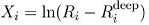
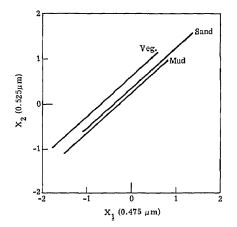
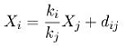
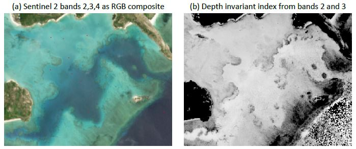
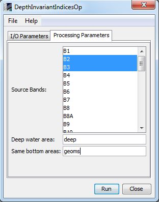

| Depth Invariant Indices Algorithm Specification | |
The calculation of depth invariant indices is a water column correction step that is frequently a useful pre-processing step for benthic classification. The presentation here follows Lyzenga (1978) and Green et al. (2000). The basic ideal is that attenuation of the reflectance is approximately inverse exponential with water depth, therefore the transform,
approximately linearises the effect of depth on reflectance. Ri is the pixel reflectance in band i, and Ri-deep, is the deep water reflectance in that band. A plot of the pixel values of two such transformed bands over a benthic type with constant reflectance but at different depths will lie on a line (following figure)
The slope of these lines is the same and is dependent on the optical properties of the water, but the vertical position (i.e. the x or y-intercept) of the lines is not, and is a function of the bottom reflectance. In mathematical terms for bands i and j,
The constant term dij determines the intercept and is the depth invariant index we seek to compute. It is therefore necessary to know the ratio of the water attenuation coefficients in the two bands ki/kj, however it is not necessary to know the individual attenuation coefficients. The ratio can be calculated from the image by taking a sample of pixels of consistent bottom type over a range of depths and performing a least squares regression of the above equation. The procedure is therefore entirely image based, and knowledge of the bottom reflectances, water optical properties or depths are not required. A weakness however is that it is assumed that water optical properties are consistent across the site at least such that the ratio of the attenuation coefficients ki and kj are consistent.
The step by step process to produce one depth-invariant index layer is:
An example generation of a depth invariant index layer from bands 2 and 3 of a Sentinel 2 image is shown below.

| Parameter | Description |
|---|---|
| deepWaterVector | The sample area/s of the image over a deep water region. This parameters must be the name of a vector data contained in the source product. If the source product does not contain this kind of data, the user should create it previously by creating a new vector data container and adding some areas by using the available tools (Rectangle, Polygon or Ellipse drawing tools) |
| sameBottomVectors | The set of ROIs over the same bottom type but at different depths. This parameters must be the name of a vector data contained in the source product. If the source product does not contain this kind of data, the user should create it previously by creating a new vector data container and adding some areas by using the available tools (Rectangle, Polygon or Ellipse drawing tools) |
| sourceBandNames | The bands to be used in the algorithm. The user must select two bands with the same raster size. |
The parameters described above can be set through the graphical user interface designed in the SNAP Desktop component:
